OEDA Advisory Council
Jason Wallin, Manager
Oregon Enterprise Data Analytics
2025-09-29
Welcome!
OEDA Advisory Council Kickoff
Monday, September 29, 2025, 2:35-3:55
Meeting goal: To establish a shared understanding of OEDA’s renewed purpose and to activate the OEDA Advisory Council as strategic partners in cross-agency collaboration.
| Time | Topic | Lead | Objective |
|---|---|---|---|
| 2:35 | Welcome | Jason | Tech check; outline the agenda; start recording and transcription, with consent |
| 2:40 | Introductions: Our winding paths | All | Connection: What was your path to a data/research career with Oregon state government? |
| 3:15 | Meet OEDA: Our purpose and potential | Jason | Our founding, mission, vision, & values |
| 3:20 | Helping shape our future | Jason | OEDA’s need for your intelligence, insight, and interaction |
| 3:30 | Cross-agency insights | All | Brainstorm: Real-world opportunities & challenges |
| 3:50 | Closing & next steps | Jason | Next time: OEDA team, council charter, OEDA processes |

Our Winding Paths
In under 2 minutes:
- Name
- Pronouns if you like
- Agency
- Role
- Short story of the winding path that brought you to data/research in Oregon

Photo credit Circles in the Sand, Bandon
Meet OEDA: Our Purpose and Potential
Our Purpose
The Founding Vision: POP 121
2015-2017 Governor’s Budget
facilitate the analysis of data across all agencies serving the same customers/clients
2015-2017 LAB
support integration and analysis of client and customer service information across state agencies and programs [and to] provide coordination, consolidation, and clear accountability for that work
Photo credit Capitol History Gateway
- Improve the effectiveness, efficiency, and equity of social and human services in Oregon
- Be the source for enterprise outcomes across common populations, and the studies and analytics that add value to those data
- Ease enterprise data integration and use
Our Potential
OEDA’s Mission & Vision
Our Mission
OEDA provides timely, objective, and independent research and analytics with integrated data. We enable Oregon’s human services agencies to make informed, effective, and equitable decisions for the well-being of Oregonians.
Our Vision
Oregon state agencies integrating data to measure performance, evaluate services, test ideas, and improve operations.
Our Values
OEDA’s products are
- Relevant & impactful
- Rigorous, transparent, & trustworthy
- Accessible, understandable, & approachable
- Innovative
Working with OEDA is
- Ethical
- Constructive
- Collaborative & communicative
- Well-managed, professional, & conscientious
The Reality of OEDA’s History
2018-today: Supporting the analytics capability of ODHS
- Program evaluation
- Ad hoc exploratory & confirmatory analytics
- Machine learning, predictive models, large language models
- Survey design and analysis
- Measurement development
- Simulation
- Optimization
- Telematics
- DUAs
A Future, Together
Realizing the cross-agency vision
Strategic intelligence
- Recent successes, new or perennial problems, opportunities
- Emerging policy that suggests research questions, evaluation, etc.
- Recent attention from the legislature, courts, press, governor, etc.
- The scuttlebutt from other states, policy think tanks, and other trusted sources of info
- New opportunities with your agency data systems
- Political or logistical roadblocks here or on the horizon
Critical audience
- Vet our research proposals
- Is this the right question?
- Will answering it help move your organization in the right direction?
- Are we using a good-enough-for-now, safe-enough-to-try approach?
- You will be our first and most important focus group to ensure our portfolio is valuable.
- Bring your lens to interpretations, conclusions, and recommendations from analytics and studies
Agency champions
- Help connect the silos; think and act at the state level
- Advocate with your leadership to support the chartering of projects
- Make research actionable: bring findings and insights back to your agency and help make changes
Strategy
graph LR
t[Trust]
g[Governance]
p[Projects]
i[Infrastructure]
t --> g --> p --> i
style t fill:#ffffff,stroke:#333333,stroke-width:1px,fill-opacity:0.1
style g fill:#ffffff,stroke:#333333,stroke-width:1px,fill-opacity:0.1
style p fill:#ffffff,stroke:#333333,stroke-width:1px,fill-opacity:0.1
style i fill:#ffffff,stroke:#333333,stroke-width:1px,fill-opacity:0.1
Build trust
- Emphasize consent in decisions
- Honor agency-specific constraints and priorities
- Be transparent & curious
- Focus on process & partnership in new empirical work
graph LR
t[Trust]
g[Governance]
p[Projects]
i[Infrastructure]
t --> g --> p --> i
style t fill:#ff7f0e,stroke:#333333,stroke-width:2px,fill-opacity:0.1
style g fill:#ffffff,stroke:#333333,stroke-width:1px,fill-opacity:0.1
style p fill:#ffffff,stroke:#333333,stroke-width:1px,fill-opacity:0.1
style i fill:#ffffff,stroke:#333333,stroke-width:1px,fill-opacity:0.1
Build a flexible approach to governance
- Traditional DUAs, IAAs, or MOUs
- Explore OEDA as analytics support for DAS EMOU
- Explore an OEDA umbrella agreement
- Streamline onboarding new projects
- Reduce friction in cross-agency collaboration
graph LR
t[Trust]
g[Governance]
p[Projects]
i[Infrastructure]
t --> g --> p --> i
style t fill:#ffffff,stroke:#333333,stroke-width:1px,fill-opacity:0.1
style g fill:#ff7f0e,stroke:#333,stroke-width:2px,fill-opacity:0.1
style p fill:#ffffff,stroke:#333333,stroke-width:1px,fill-opacity:0.1
style i fill:#ffffff,stroke:#333333,stroke-width:1px,fill-opacity:0.1
Build persistent infrastructure, piecemeal
- No requirement for persistent or ad hoc data sharing
- Don’t start with a grand, standing integrated data set (a la OCID)
- When designing studies and projects, offer options for modular, persistent products for long-term insight, when comfortable & feasible
- Integration policy library
- EventLine
- Enterprise outcomes
- COIN
graph LR
t[Trust]
g[Governance]
p[Projects]
i[Infrastructure]
t --> g --> p --> i
style t fill:#ffffff,stroke:#333333,stroke-width:1px,fill-opacity:0.1
style g fill:#ffffff,stroke:#333333,stroke-width:1px,fill-opacity:0.1
style p fill:#ff7f0e,stroke:#333,stroke-width:2px,fill-opacity:0.1
style i fill:#ff7f0e,stroke:#333,stroke-width:2px,fill-opacity:0.1
Cross-agency insights
Whiteboard activity
- 5-minute silent brainstorm
- Add one or more sticky notes to the board, in whichever columns you like.
- 15-minute discussion
- Start with clarifying questions about any of the sticky notes
- Then move into responding, probing, or connecting ideas, or opening new avenues of discussion
Shared populations
Describe a part of the population that you serve that you think also has connections with another agency here. This could be prior to, during, or after the population’s connection with your agency.
Evaluations
Name a program your agency administers, a service you contract for, or something similar where a relevant outcome isn’t something you record in your data systems, but might be found in the systems of someone else here.
Keys to collaboration
Identify “keys” that could unlock cross-agency collaboration with integrated data. These could be data sources, successful examples that could be emulated, a vital process that needs fixing, etc.
Next time
- Introduce the OEDA team
- Discuss a council charter
- Discuss project initiation, ideation, proposals, & design
Appendices
POP 121: Governor’s budget
To “facilitate the analysis of data across all agencies serving the same customers/clients.” (2015-2017 Governor’s Budget, p. C-80).
This was part of the Improving Government Outcome Area of the Ten Year Plan for Oregon: “Government will be trustworthy, responsive, and solve problems in a financially sustainable way.”
POP 121: Legislatively approved budget
To “support integration and analysis of client and customer service information across state agencies and programs [and to] provide coordination, consolidation, and clear accountability for that work” (Legislative Fiscal Office, p. 109).
POP 121: The whys
Goal: Improve the effectiveness, efficiency, and equity of social and human services in Oregon.
- Support state government achieving shared outcomes with research and evaluation
- Identify costs, risks, outcomes, and needs at the state, community, family, & individual level
- Build a broad and holistic picture of clients, customers, families
- Better understand state services from a life course, client/customer perspective
- More efficient allocation of scarce resources; more effective services; better outcomes
- Identify opportunities for support upstream of crisis and negative outcomes
POP 121: The whats
Goal: Be the source for enterprise outcomes and the studies and analytics that add value to those data.
- Support government transparency & accountability with integrated, cross-system performance & outcome measures
- Focus on clients receiving social, health, educational, correctional, & employment services
- Answer questions from agencies and legislators
- Build models and tools to support decisions
- Integrate, maintain, expand, and enhance enterprise data, with governance that prioritizes analytics and model development
- Create aggregated reports only possible with integrated data
POP 121: The hows
Goal: Ease enterprise data integration and use
- Coordinate and consolidate enterprise integrative efforts
- Create an inclusive enterprise governance structure for integration, access, and use
- Build partnerships between agency researchers with specific content expertise and OEDA analytics specialists
- Develop matching methods and business rules
- Create data sharing agreements which adhere to agency, state, and federal policies
- Leverage modernizing agency data systems for integration and shared benefit
Original staffing levels
- 4 technical staff positions
- 8 research staff positions (6 RA4, 2 ECON3)
- 1 manager
Who we are
- Research analysts
- Letsogile Mponwane MPH
- Andrew Waugh PhD Political Science
- Kathryn Iurino PhD Psychology
- Michael Menefee PhD Sociology
- Pascal Lee MA Sociology
- Economist
- Marisol Cáceres Lorenzo MA Economics, MA International Aid
- Research systems specialist
- Aaron Cochran MPP
- Manager
- Jason Wallin MS Psychology
Scoping
Gleaned from notes and minutes from the 2016-2017 advisory committee
| Do this | Not that |
|---|---|
| Run studies with integrated data | Analyze siloed data |
| Analyze individual-level client data | Analyze solely aggregated data |
| Report aggregated data, summaries, statistical tests | Report individual-level client data |
| Create multivariate studies and analytics | Report univariate or crosstabbed counts |
| Support agencies moving to a desired future state | Merely reflect history or the current state |
| Provide additional capacity to agencies | Take on work already done in partner agencies |
| Ease inter-agency data sharing for OEDA studies | Share identifiable integrated data with others |
| Be transparent with agencies about how data are used | Be opaque |
| Enrich individual level data with location data | Analyze solely location data |
Brief OEDA timeline
---
config:
theme: 'dark'
---
timeline
title Oregon Enterprise Data Analytics
section OEDA with OFRA
2015 : OEDA created with 2025-2017 budget
2016 : OEDA Advisory Committee chartered
2017 : <br>
section OEDA with ORRAI
2018 : ORRAI created
: Committee ended
2019 : COIN & longitudinal dataset talks began
2020 : <br>
2021 : COIN and dataset talks ended
2022 : <br>
2023 : OEDA manager hired
2024 : <br>
2025 : Strategic planning
: New OEDA Advisory Council begins
Where we are
flowchart TB
ODHS[ODHS]
OHA((OHA))
ORRAI[ORRAI]
OEDA@{ shape: delay, label: "OEDA" }
DW[DW]
Imp[Implementation]
Rep[Reporting]
Res[Research]
SSBC@{ shape: delay, label: "SSBC" }
ODHS --> ORRAI
subgraph grp1[" "]
direction LR
ORRAI --> OEDA
ORRAI ---> DW
ORRAI ---> Imp
ORRAI ---> Rep
ORRAI ---> Res
end
OHA --> SSBC
ODHS --> SSBC
subgraph big[" "]
direction LR
grp1
SSBC
end
SSBC --> OEDA
style grp1 fill:#184E49,stroke:#ffffff,stroke-width:2px;
style big fill:#184E49,stroke:#ffffff,stroke-width:2px;
Whither ICS?
flowchart TB
ODHS[ODHS]
OHA((OHA))
ORRAI[ORRAI]
OEDA@{ shape: delay, label: "OEDA" }
DW[DW]
Imp[Implementation]
Rep[Reporting]
Res[Research]
SSBC@{ shape: delay, label: "SSBC" }
CFO[CFO]
OFRA@{ shape: delay, label: "OFRA" }
ICS@{ shape: delay, label: "ICS" }
ODHS --> ORRAI
ODHS --> CFO
subgraph grp1[" "]
direction LR
ORRAI --> OEDA
ORRAI ---> DW
ORRAI ---> Imp
ORRAI ---> Rep
ORRAI ---> Res
end
subgraph grp2[" "]
direction TB
CFO --> OFRA
OFRA --> ICS
end
OHA --> SSBC
ODHS --> SSBC
subgraph big[" "]
direction LR
grp1
SSBC
grp2
end
SSBC --> OFRA
SSBC --> OEDA
style grp1 fill:#184E49,stroke:#ffffff,stroke-width:2px;
style grp2 fill:#184E49,stroke:#ffffff,stroke-width:2px;
style big fill:#184E49,stroke:#ffffff,stroke-width:2px;

OEDA Advisory Council Kickoff